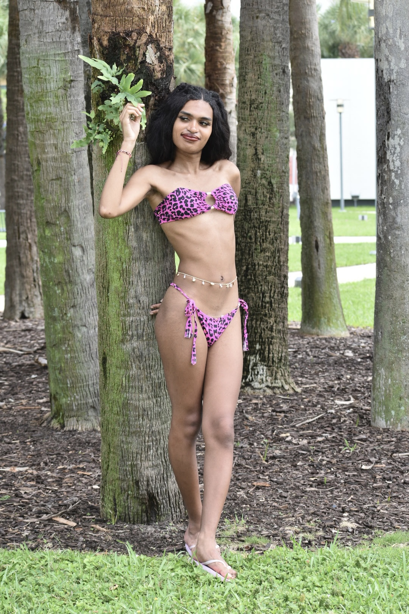

Miami, FL — May 31, 2026 — The 2026 edition of Miami Swim Week brought upon a stellar run for second-year model Aria Carmona. The 22-year old talent led the LUXE Style show, and in doing so continues a streak of opening or closing at least once in her previous five shows.
The TDTD Model-backed model had made headlines in the days leading up to the show, having done and attended engagements with Miami's Rebel Agency, America's Next Top Model contestant Jeana Turner, Lila Nikole and Art Hearts Fashion. It is there that she bagged key connections that solidified her position at the sharp end of the Miami runway grid Sunday.
After such an important show, which had gone successful - Aria then modeled bikinis for the longtime Miami-based brand Desireenerchan - which also featured in close confidant Esmeralda Ovalles' show the day prior. Together, the pair took Miami Beach by storm in 2026.
One year on from her debut show, Aria has shown growth and results to go with her potential. Striking confidence, poise, and an immense dedication to her craft are the keys she attributes to her explosive run in Miami 2026.
Follow Aria on Instagram @aria.glo to stay up-to-date on her journey and upcoming projects.
Back to news